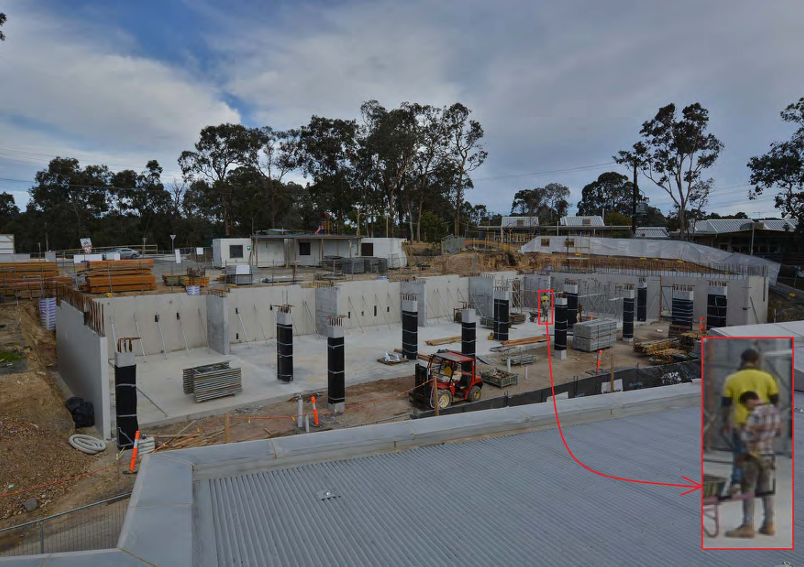

|
|
Ammar Kamoona
B.Eng.,MS.c Electrical and Electronic Engineering, Ph.D student Rmit University of Technology Melboune, Australia Email: ammarkamoona.2012@gmail.com |

| [Education] | [Experience] | [Research Interests] | [Publications] | [Honors & Awards] |
| • 09/2005-07/2010 | Msc., Electrical & Electronic Engineering, Swinburne University of Technology |
| • 09/2001-07/2005 | B.Eng., Electrical Engineering, University of Kufa |
[↑TOP]
Experience
| • 07/2018-now | Ph.D student, Rmit University, Australia |
| • 01/2016-7/2018 | Assistant lectuer, Univesity of Kufa, Iraq |
| • 01/2011-2013 | Assistant Engineer, Univesity of Kufa, Iraq |
[↑TOP]
Research Interests
Computer vision, Random Finits Statistics, machine learning methods and their related applications particularly in video surveillance, intelligent
[↑TOP]
Selected Publications
- A. M. Kamoona*,Gostar and R. Tennakoon and A. Bab-Hadiashar D. and R. Hoseinnezhad , “SparsityBased Naive Bayes Approach for Anomaly Detection in Real Surveillance Videos,” The 8 th International conference on Control, Automation & Information Sciences (ICCAIS), Chengdu, China, 23-26 October, 2019.
- A. M. Kamoona*,Gostar and R. Tennakoon and A. Bab-Hadiashar and D. Accadia and J. Thorpe and R. Hoseinnezhad , “Random Finite Set-Based Anomaly Detection for Safety Monitoring in Construction Sites,” IEEE access, 2019. [PDF]
- A. M. Kamoona, and J. Ch. Patra,, “A novel enhanced cuckoo search algorithm for contrast enhancement of gray scale images,” Applied soft computing , 2019.
- A. M. Kamoona, and J. Ch. Patra, “An Enhanced Cuckoo Search Algorithm for Solving Optimization Problems,” Proc. IEEE Congress on Evolutionary Computation (CECE), 2018. [PDF]
[↑TOP]
Honors and Awards
| • 2017 | Golden Key Certificate |
| • 2017 | Certificates of Excellence Awards in Stochastic Modelling & Survival Analysis |
| • 2017 | Certificates of Excellence Awards in RF Circuit Design |
[↑TOP]
Membership:
• IEEE Young Professional Memebership
• Golden Key Memeber
Projects
My research projects mainly concentrate on three aspects.
| 1. | Automatic Image Enhancement. |
• Image Ehancement [Demo Link1 Link2 ]
| 2. | Anomaly Detection in Machine Vision. include/safety vest detection, abnormal behaviour, etc. |
• safety vest detection

[↑TOP]
Last updated: October 2019
Hit Counter:
HTML Hit Counters
Since October 2019